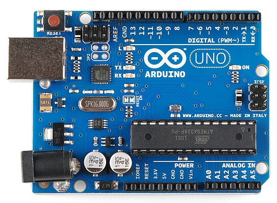

Chi lo conoscerà bene, chi ne avrà sentito parlare senza saperne niente, chi si chiederà chi mai sia Arduino.
Più corretto sarebbe è dire "cosa" sia Arduino, dal momento che non è una persona ma una particolarissima scheda elettronica, una volta tanto made in Italy!
Questo circuitino, semplice all'apparenza, partendo dall'Italia ha conquistato il mondo. Provate a scrivere "arduino" su Google e vedrete... 10 milioni di risultati!
Per farla breve, Arduino è un microcontrollore programmabile, completamente open source.
Ma cos'è un microcontrollore programmabile?
E' un aggeggio al quale si può far fare quello che si vuole, o quasi.
Vedete quei connettori neri ai lati della scheda? Da lì entrano ed escono dei segnali elettrici (mica chissà chè, si tratta di una semplice tensione che c'è o non c'è) i quali possono comandare degli attuatori esterni secondo le proprie necessità.
Si possono far fare cose banalissime (lampeggiare un LED) o cose complicatissime (la sequenza di movimenti di un robot), passando per tutti gli stadi intermedi.

Tutto con questo piccolissimo hardware di 35 centimetri quadrati!
Cosa cambia tra una applicazione e l'altra? Solo il listato del programma!
E l'ambiente di sviluppo (in linguaggio C) è completamente libero e gratuito, come liberi e gratuiti sono gli infiniti esempi applicativi che si trovano in rete.
Questo è stato il segreto dell'enorme successo di Arduino, il cui prezzo di acquisto per es. su ebay è veramente ridicolo rispetto alle potenzialità.
In questo periodo invernale di pausa chimica forzata, mi sono avvicinato a questo giocattolino veramente coinvolgente (per chi ha nel DNA anche l'elettronica).
Lui è semplice, ma la programmazione all'inizio può essere (anzi, è) veramente un rompicapo, e come tale di grande soddisfazione quando se ne viene appunto... a capo!
Sì, ma per farci che cosa? - dirà qualcuno.
Ecco la domanda terribile!: che ci fai con una cosa che ti piace?
Imparo cose nuove, rispondo di solito.
(In realtà l'utilità pratica recondita c'è l'ho, ma è irrilevante rispetto al piacere di nuove scoperte).